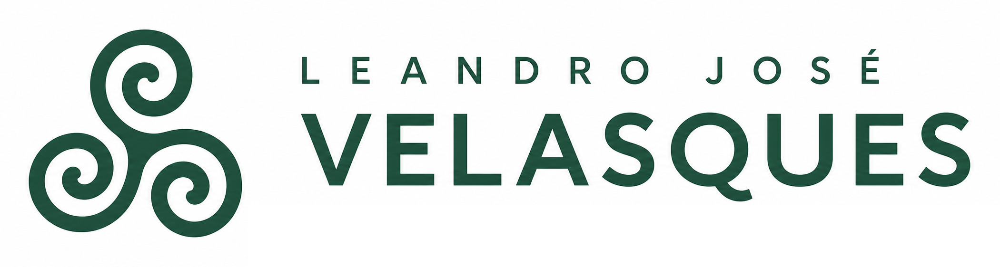
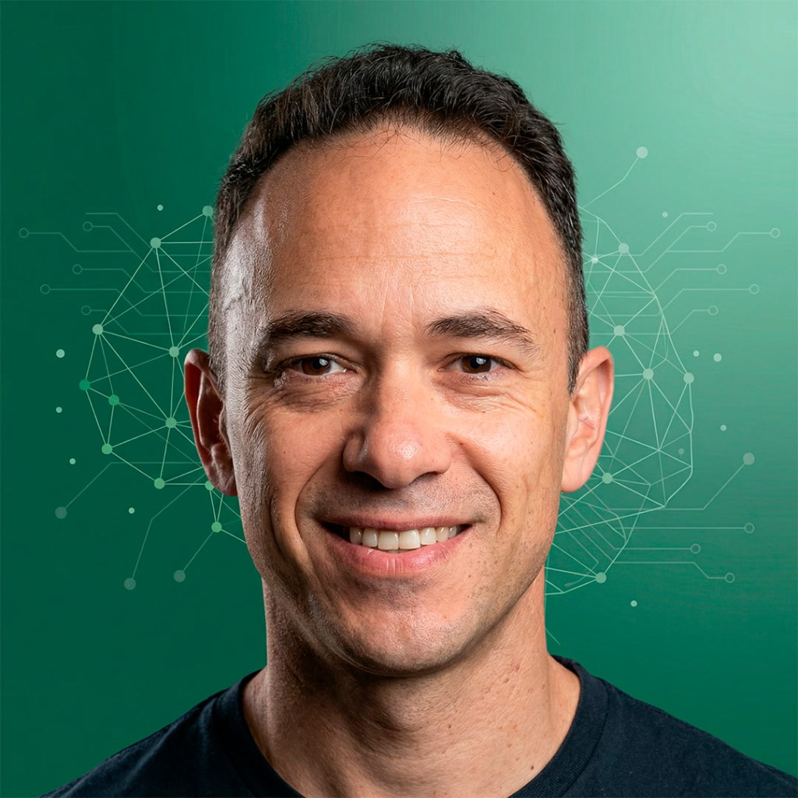

Automatización de procesos
Flujos administrativos, comerciales y operativos que reducen tiempos y errores.

CV PROFESIONAL · CONSULTORA IA
Lic. en Administración
Consultor y director de proyectos de IA aplicada a negocios.
Una trayectoria construida entre la gestión, la mejora de procesos y la incorporación práctica de tecnología.

PERFIL PROFESIONAL
Soy licenciado en Administración y profesional independiente. Acompaño a pymes, profesionales y organizaciones para ordenar procesos e incorporar inteligencia artificial, automatización y marketing digital donde aporten una mejora concreta.
Dirijo los proyectos desde el diagnóstico hasta la implementación. Según el trabajo, coordino especialistas y capacito a los equipos para que puedan usar las soluciones en su actividad diaria.
CÓMO PUEDO APORTAR VALOR
Problemas reales, procesos concretos y herramientas que puedan sostenerse en el trabajo cotidiano.
Flujos administrativos, comerciales y operativos que reducen tiempos y errores.
Herramientas para atención, gestión, análisis y soporte interno.
Estrategias para mejorar presencia, captación, conversión y relación con clientes.
Conexión entre n8n, CRM, sitios web, formularios, bases de datos y plataformas.
TRAYECTORIA PROFESIONAL
Un recorrido profesional que combina consultoría, análisis, calidad, mejora continua y dirección de proyectos.
IA aplicada a negocios, automatización y marketing digital
Lidero proyectos para pymes y profesionales: analizo sus procesos, diseño soluciones con IA y automatización, coordino especialistas y acompaño la implementación. También desarrollo formación práctica en inteligencia artificial para pymes y equipos profesionales. Dirijo proyectos de marketing digital en colaboración con Hola Agencia, de Buenos Aires.
Grupo OSDE
Analicé indicadores de gasto médico y desvíos de la filial, preparé reportes y simulaciones de honorarios para evaluar su impacto presupuestario. Di soporte a la gestión de contratos y consultas de prestadores, y participé en proyectos de mejora de procesos.
Del Sol Automotor (Concesionario Ford)
Impulsé el sistema de gestión de calidad de Ford para ventas y posventa. Coordiné la atención y el análisis de reclamos, el seguimiento de indicadores de satisfacción, las auditorías internas y los planes de mejora. También administré el CRM y lideré proyectos de experiencia del cliente y de software para gestionar reclamos y entregas.
Estudio EGE
Integré un equipo de consultores senior en proyectos de diagnóstico organizacional para organismos públicos y empresas. Realicé entrevistas, relevamiento y mapeo de procesos, propuestas de mejora, manuales de procedimientos e informes para clientes. Participé en trabajos vinculados al Banco Mundial para la Dirección General de Áreas Protegidas, el Instituto Provincial del Agua y el Ministerio de Obras Públicas de Chubut. También llevé adelante búsquedas de personal para empresas de la región: definición de perfiles, publicación de avisos, preselección, entrevistas y coordinación de evaluaciones.
Socio gerente · Fábrica de Cerveza Artesanal Megan 08 (2017 - 2019)
Auxiliar de primera · Administración de la Producción - UNPSJB (2011 - 2014)
PARTICIPACIÓN INSTITUCIONAL
Experiencias de organización, representación profesional y coordinación de actividades.
Comisión de Licenciados en Administración de Chubut
Impulso proyectos y actividades para colegas de la provincia. Coordino reuniones, organizo charlas sobre el ejercicio profesional y actúo como nexo con las autoridades del Consejo Profesional de Ciencias Económicas del Chubut.
Centro Amigos del Tango de Comodoro Rivadavia
Coordiné el plan anual, las reuniones de la comisión y las actividades culturales. Trabajé con la Dirección de Cultura municipal, promoví eventos y participé en la organización del Campeonato Patagónico de Tango.
FORMACIÓN Y ACTUALIZACIÓN
Una formación que se actualiza para traducir cambios tecnológicos en decisiones y soluciones posibles.
Formación práctica en modelos de lenguaje, automatización, IA aplicada a tareas de oficina, contenidos audiovisuales, marketing y aspectos legales.
Estrategia digital, analítica, redes sociales, posicionamiento en buscadores, publicidad en Google y Meta, y email marketing.
Formación virtual en indicadores, sistemas de calidad, herramientas de mejora, métodos estadísticos e implementación de la mejora continua.
Formación universitaria en administración y gestión de organizaciones.
CURSOS Y CERTIFICACIONES COMPLEMENTARIAS
IRAM · Auditor Líder de Calidad ISO 9001:2015 (2016). 50 horas; auditoría de sistemas de gestión de calidad.
IRAM · Auditor Interno de Calidad ISO 9001:2015 (2016). 16 horas; revisión interna de sistemas de calidad.
IRAM · Implementación de Sistemas de Gestión de la Calidad ISO 9001:2015 (2015). 16 horas.
Coderhouse · Marketing Digital: Community Manager & Publicidad (2020 - 2021).
Coderhouse · Diseño Web con WordPress (jul. - ago. 2021). Proyecto final: un sitio web real.
UNPSJB · Posgrado «Las teorías de liderazgo y motivación en la Administración» (2018). 8 clases presenciales.
DOCUMENTO COMPLETO
Descargá el CV actualizado en PDF.